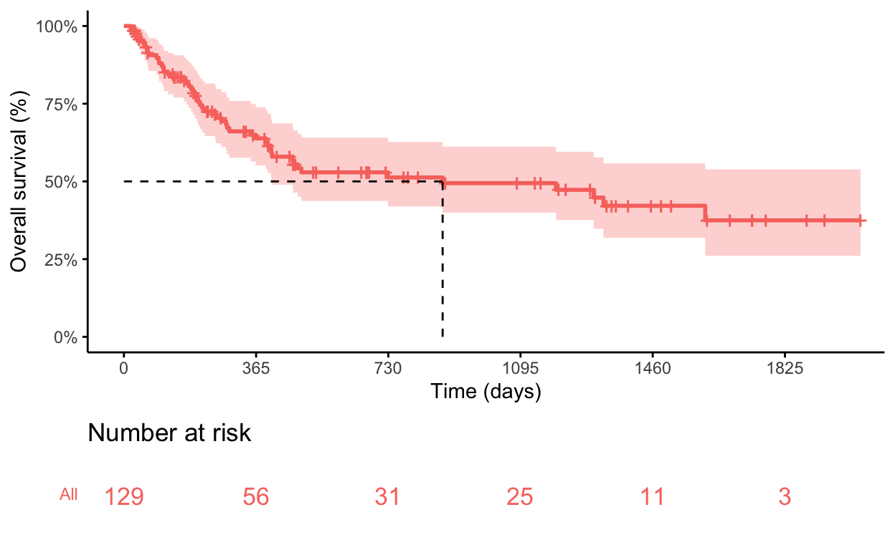
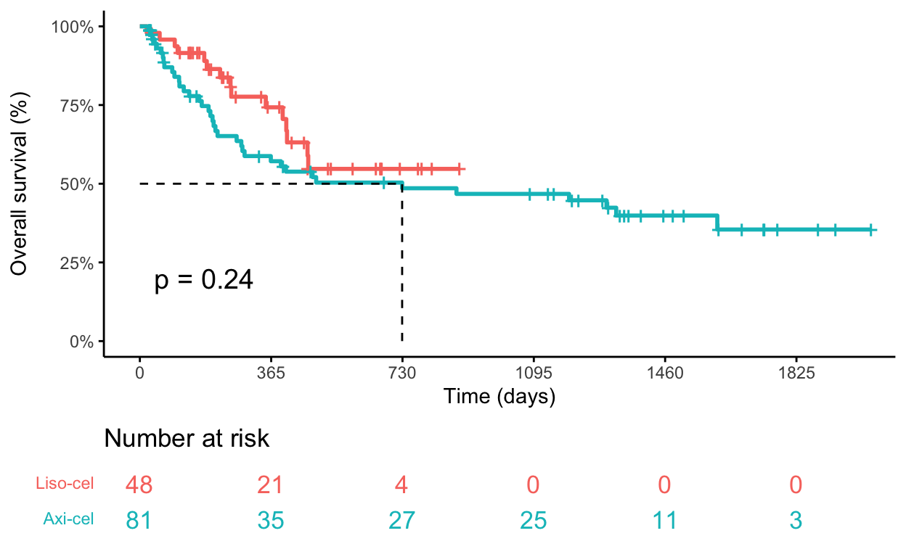
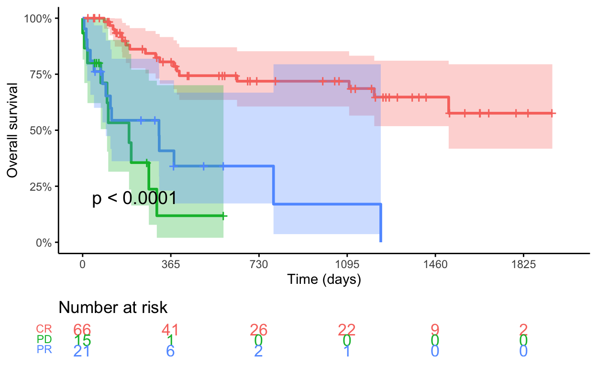
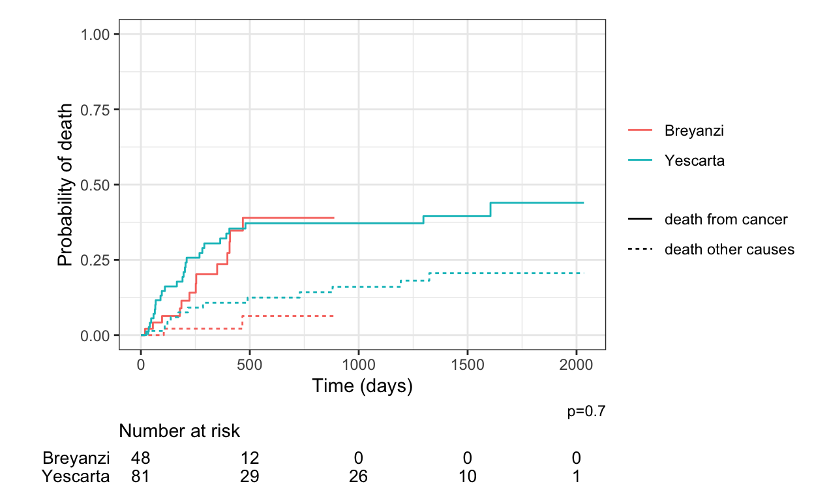

In this third session, you’ll learn how to generate Kaplan-Meier estimates and cumulative incidence plots, and perform log-rank and Gray’s testing.
Survival analysis plays a crucial role in cancer research for many reasons, including:
To estimate the probability of survival over time, which is essential for understanding the prognosis of a disease and for making informed decisions regarding treatment options.
To compare the efficacy of different treatment strategies.
To identify prognostic factors that influence survival.
To determine appropriate sample sizes, study durations, and endpoints for clinical trials.
To provide evidence of effectiveness and cost-effectiveness of different cancer treatments.
Survival analysis utilizes time-to-event data, which represent the time from a defined starting point to the occurrence of a particular event of interest.
The event of interest could be:
Survival: time until death from any cause
Disease progression: time until the disease worsens or progresses
Recurrence: the time until cancer recurs after treatment
Response to treatment: time until a specified response to treatment is achieved (i.e., tumor regression or remission)
Time-to-event data may also include individuals who have not experienced the event of interest by the end of the study, in which case their data are often censored. Censoring occurs when the event status of an individual is unknown at the time of analysis due to loss to follow-up, withdrawal from the study, or the end of the study period.
## "survival" allows you to a create survival curves from a formula (e.g., Kaplan-Meier).
install.packages("survival")
## "survminer" allows you to draw survival curves with the "number at risk" table.
install.packages("survminer")
## "tidycmprsk" provides an intuitive interface for working with competing risk endpoints. Methods follow those introduced in Fine and Gray (1999).
install.packages("tidycmprsk")
## "ggsurvfit" can be used to draw cumulative incidence curves.
install.packages("ggsurvfit")db = read_excel(path="sample.data.xlsx")In survival analysis, the median follow-up time is a crucial measure that indicates the duration of time until half of the subjects have experienced the event of interest (e.g., death) or been censored. A simple way to determine median follow-up is to simply calculate the median time to date of last contact (DLC) among survivors.
Use the filter() and median() functions to calculate the median Days.to.DLC among survivors.
## Two functions are used: median() and filter()
## filter() allows you to only select patients who have a certain feature (i.e., Death==0)
## median() allows you to calculate the median of a set of numbers
## We are filtering out all the patients who died, then passing all the remaining Days.to.DLC among survivors to the median() function for calculation.
median(
filter(db, Death==0)$Days.to.DLC
)[1] 440.5The Reverse Kaplan-Meier method (RKM) aids in estimating the median follow-up time by providing a way to estimate the median follow-up duration as the time at which the probability of completing follow-up (i.e., reaching date of last contact without death) crosses 50%. This method censors each death and treats ongoing survival as an event. Subjects who are censored (i.e., die) contribute to the estimation of follow-up up to the time of death, but they do not contribute to the estimation of follow-up beyond that point.
Bottom line: By accounting for the duration of follow-up of all patients in a study, even those who died, the RKM method provides a comprehensive estimate of the median follow-up duration. Because it accounts for all patients, it generally results in a longer median follow-up duration.
Create a temporary dataset where “Reverse_death” is “1” for survival and “0” for death. This is necessary for the reverse Kaplan_Meier method, where you are treating 0 as an event (death) and 1 as censored. Use the survfit() function to fit a Surv() object incorporating Days.to.DLC and Reverse_death as the time and event, respectively.
Hint: Incorporate “~1” into the survfit() function to indicate that there is no covariate or predictor variable included in the model.
Call: survfit(formula = Surv(Days.to.DLC, Reverse_death) ~ 1, data = data1)
n events median 0.95LCL 0.95UCL
[1,] 129 76 673 524 1152EXERCISE 1: Using the RKM method, estimate the median duration of follow-up for patients treated with liso-cel and axi-cel. Does one have longer follow-up?
# Create temporary data set with Reverse_death variable
data1 = db %>%
mutate(
Reverse_death = ifelse(Death == 1, 0,1)
)
# RKM estimate for Liso-cel
survfit(
Surv(Days.to.DLC, Reverse_death) ~ 1, filter(data1, CAR.T.Product.Type=="Breyanzi") )
# RKM estimate for Axi-cel
survfit(
Surv(Days.to.DLC, Reverse_death) ~ 1, filter(data1, CAR.T.Product.Type=="Yescarta") )First create a survfit() object by specifying time as Days.to.DLC and the event as Death.
Second, use the ggsurvplot() function to draw a Kaplan-Meier curve.
## Use the survit() function to fit a Kaplan-Meier survival curve.
## Model overall survival using the time variable "Days.to.DLC" and the event indicator variable "Death."
## The "~ 1" means you are modeling overall survival without any covariates.
km_OS <- survfit(
Surv(Days.to.DLC, Death) ~ 1 , data = db)
ggsurvplot(km_OS,
risk.table = TRUE, # Add risk table
risk.table.col = "strata", ## Specifies the color of the risk table
ggtheme = theme_classic(), ## Set the theme of the plot
tables.theme = theme_cleantable(), ## Set the theme of the table
surv.median.line = "hv", # Specify median survival
xlab="Time (days)", ylab = "Overall survival (%)", ## Label your axes
break.x.by = c(365), ## Break up the x-axis by year intervals
ylim = c(0,1), ## Set the y-axis range between 0% and 100%
break.y.by = c(0.25), ## Break up the y-axis by intervals of 25%
legend = "none", ## Hides the legend
surv.scale = "percent", ## Set the y-axis to percentage rather than fraction
)
EXERCISE 1: Draw the Kaplan-Meier curve in terms of months rather than days.
# A simple way to change from days to months is to divide by 30 within the Surv() object
km_OS <- survfit(
Surv(Days.to.DLC/30, Death) ~ 1 , data = db)
# Adjust the x-axis label and break points
ggsurvplot(km_OS,
risk.table = TRUE,
risk.table.col = "strata",
ggtheme = theme_classic(),
tables.theme = theme_cleantable(),
surv.median.line = "hv",
xlab="Time (months)", ylab = "Overall survival (%)", ## Change x-axis label to reflect months
break.x.by = c(12), ## Change the x-axis break points to be 12 months
ylim = c(0,1),
break.y.by = c(0.25),
legend = "none",
surv.scale = "percent",
)When creating the survfit() object, specify that it should be stratified by CAR.T.Product.Type.
## Use the survit() function to fit a Kaplan-Meier survival curve.
## Model overall survival using the time variable "Days.to.DLC" and the event indicator variable "Death."
## The "~ 1" means you are modeling overall survival without any covariates.
km_OS <- survfit(
Surv(Days.to.DLC, Death) ~ CAR.T.Product.Type , data = db)
ggsurvplot(km_OS,
risk.table = TRUE,
risk.table.col = "strata",
ggtheme = theme_classic(),
tables.theme = theme_cleantable(),
surv.median.line = "hv",
xlab="Time (days)", ylab = "Overall survival (%)",
break.x.by = c(365),
ylim = c(0,1),
break.y.by = c(0.25),
legend = "none",
surv.scale = "percent",
legend.labs = c("Liso-cel","Axi-cel"), ## Adds labels to the legend
pval=TRUE, ## Adds a p-value derived from Log-Rank testing
)
EXERCISE 1: Add “conf.int = TRUE” within the ggsurvplot() function to visualize the 95% confidence intervals.
km_OS <- survfit(
Surv(Days.to.DLC, Death) ~ CAR.T.Product.Type , data = db)
ggsurvplot(km_OS,
risk.table = TRUE,
risk.table.col = "strata",
ggtheme = theme_classic(),
tables.theme = theme_cleantable(),
surv.median.line = "hv",
xlab="Time (days)", ylab = "Overall survival (%)",
break.x.by = c(365),
ylim = c(0,1),
break.y.by = c(0.25),
legend = "none",
surv.scale = "percent",
legend.labs = c("Liso-cel","Axi-cel"),
pval=TRUE,
conf.int = TRUE
)EXERCISE 2: What is the relationship between pre-LD LDH and OS? Stratify the Kaplan-Meier plot for OS by elevated pre-lymphodepletion LDH (>=210; “High.LDH” variable) to find out.
km_OS <- survfit(
Surv(Days.to.DLC, Death) ~ High.LDH , data = db)
ggsurvplot(km_OS,
risk.table = TRUE,
risk.table.col = "strata",
ggtheme = theme_classic(),
tables.theme = theme_cleantable(),
surv.median.line = "hv",
xlab="Time (days)", ylab = "Overall survival (%)",
break.x.by = c(365),
ylim = c(0,1),
break.y.by = c(0.25),
legend = "none",
surv.scale = "percent",
legend.labs = c("Normal LDH", "High LDH"),
pval=TRUE,
conf.int = TRUE
)The summary() function can be used on a survfit object to obtain summary statistics.
Call: survfit(formula = Surv(Days.to.DLC, Death) ~ CAR.T.Product.Type,
data = db)
CAR.T.Product.Type=Breyanzi
time n.risk n.event survival std.err
365.0000 21.0000 10.0000 0.7427 0.0722
lower 95% CI upper 95% CI
0.6139 0.8985
CAR.T.Product.Type=Yescarta
time n.risk n.event survival std.err
365.0000 35.0000 28.0000 0.5715 0.0617
lower 95% CI upper 95% CI
0.4626 0.7061 We can also pipe the output of the survfit() function into the tbl_survfit() function using the %>% operator.
survfit(Surv(Days.to.DLC, Death) ~ CAR.T.Product.Type , data = db) %>%
tbl_survfit(
times = 365,
label_header = "**1-year OS (95% CI)**" ## This sets a label for the header of the table
) %>% add_p| Characteristic | 1-year OS (95% CI) | p-value1 |
|---|---|---|
| CAR.T.Product.Type | 0.2 | |
| Breyanzi | 74% (61%, 90%) | |
| Yescarta | 57% (46%, 71%) | |
| 1 Log-rank test | ||
First create a survfit() object by specifying time as Days.to.relapse.death.or.DLC and the event as Relapse.or.death.
km_PFS <- survfit(Surv(Days.to.relapse.death.or.DLC, Relapse.or.death) ~ CAR.T.Product.Type, data = data1 )
ggsurvplot(km_PFS,
risk.table = TRUE,
risk.table.col = "strata",
ggtheme = theme_classic(),
tables.theme = theme_cleantable(),
surv.median.line = "hv",
xlab="Time (days)", ylab = "Progression-free survival (%)",
break.x.by = c(365),
ylim = c(0,1),
break.y.by = c(0.25),
legend = "none",
surv.scale = "percent",
legend.labs = c("Liso-cel","Axi-cel"), ## Adds labels to the legend
pval=TRUE, ## Adds a p-value derived from Log-Rank testing
pval.coord = c(1825,0.1) ## Shift the p-value to bottom right part of the plot
)survfit(Surv(Days.to.relapse.death.or.DLC, Relapse.or.death) ~ CAR.T.Product.Type , data = db) %>%
tbl_survfit(
times = 365,
label_header = "**1-year PFS (95% CI)**" ## This sets a label for the header of the table
)| Characteristic | 1-year PFS (95% CI) |
|---|---|
| CAR.T.Product.Type | |
| Breyanzi | 46% (33%, 64%) |
| Yescarta | 47% (36%, 60%) |
Best response to CD19 CAR-T therapy occurs within 90 days after infusion, and can mature from a PR at day 30 to a CR at day 90. Since the final response is not known until day 90, patients are effectively “immortal” (or potentially misclassified) until this timepoint.
The term “immortal time” refers to the period of follow-up time during which the outcome of interest cannot occur. During this immortal time, individuals are erroneously classified as unexposed (i.e., no response) or as having a different exposure status than they actually do (i.e., PR rather than eventual CR).
Landmark analysis may be used to mitigate immortal time bias. In this analysis, a landmark time is selected and any subjects who were lost to follow-up or died prior to this time are excluded from the analysis.
Conduct a landmark analysis using the following steps:
Define the landmark time point: Since best response is evaluated within 90 days after CAR-T infusion, set the landmark to be 90 days.
Subset the data: Filter the dataset to include only observations where the time to the event of interest is greater than or equal to the landmark time point. Create a new variable representing the time from the landmark time point to the event.
Survival analysis and visualization: Fit the Kaplan-Meier survival curves for overall survival stratified by the Best.response variable using the subsetted data.
# Define landmark timepoint
landmark = 90 ## This sets the landmark time point at 90 days
# Subset the data
data1 <- db %>%
filter(Days.to.DLC >= landmark) %>%
mutate(
Landmark.to.DLC = Days.to.DLC - landmark
)
## Stratify OS by the "Best.response" variable
ggsurvplot(survfit(Surv(Landmark.to.DLC, Death) ~ Best.response, data = data1),
pval=TRUE,
conf.int = TRUE,
risk.table = TRUE, # Add risk table
risk.table.col = "strata", # Change risk table color by groups
tables.height = 0.2,
ggtheme = theme_classic(),
tables.theme = theme_cleantable(),
xlab="Time (days)", ylab = "Overall survival",
xlim = c(0,2000), break.x.by = c(365),
ylim = c(0,1), break.y.by = c(0.25),
legend.labs = c("CR","PD", "PR"),
legend = "none",
surv.scale = "percent"
)
EXERCISE 1: Draw a Kaplan-Meier curve for PFS stratified by best response using day 90 as a landmark. (Hint: patients with progressive disease must be excluded)
# Define landmark timepoint
landmark = 90 ## This sets the landmark time point at 90 days
# Subset the data
data1 <- db %>%
filter(Days.to.relapse.death.or.DLC >= landmark & Best.response != "PD") %>% ## Filter patients with PD
mutate(
Landmark.to.relapse.death.or.DLC = Days.to.relapse.death.or.DLC - landmark
)
ggsurvplot(survfit(Surv(Landmark.to.relapse.death.or.DLC, Relapse.or.death) ~ Best.response, data1),
pval=TRUE,
conf.int = TRUE,
risk.table = TRUE, # Add risk table
risk.table.col = "strata", # Change risk table color by groups
tables.height = 0.2,
ggtheme = theme_classic(),
tables.theme = theme_cleantable(),
xlab="Time (days)", ylab = "Progression-free survival",
xlim = c(0,2000), break.x.by = c(365),
ylim = c(0,1), break.y.by = c(0.25),
legend.labs = c("CR","PR"),
legend = "none",
surv.scale = "percent"
)EXERCISE 2: Draw a Kaplan-Meier curve for PFS stratified by INITIAL response using day 30 as a landmark.
# Define landmark timepoint
landmark = 30 ## This sets the landmark time point at 90 days
# Subset the data
## Filter patients with PD and SD (there are only 3)
data1 <- db %>%
filter(Days.to.relapse.death.or.DLC >= landmark & Initial.response != "PD" & Initial.response != "SD") %>%
mutate(
Landmark.to.relapse.death.or.DLC = Days.to.relapse.death.or.DLC - landmark
)
ggsurvplot(survfit(Surv(Landmark.to.relapse.death.or.DLC, Relapse.or.death) ~ Initial.response, data1),
pval=TRUE,
conf.int = TRUE,
risk.table = TRUE, # Add risk table
risk.table.col = "strata", # Change risk table color by groups
tables.height = 0.2,
ggtheme = theme_classic(),
tables.theme = theme_cleantable(),
xlab="Time (days)", ylab = "Progression-free survival",
xlim = c(0,2000), break.x.by = c(365),
ylim = c(0,1), break.y.by = c(0.25),
legend.labs = c("CR","PR"),
legend = "none",
surv.scale = "percent"
)Competing risks analysis is a statistical method used in survival analysis to analyze the time-to-event data in the presence of multiple competing events. In many real-world scenarios, individuals or subjects may experience different types of events, and these events may preclude the occurrence of other events. Competing risks analysis explicitly accounts for these competing events and provides estimates of the cumulative incidence of each event over time, considering the presence of other events as competing risks.
The cumulative incidence function estimates the probability of experiencing a specific event of interest in the presence of competing risks. It accounts for the occurrence of other competing events and provides estimates of the cumulative incidence of the event of interest over time.
Gray’s test is a statistical method used in competing risks analysis to compare the cumulative incidence functions of two or more groups. It’s an extension of the log-rank test commonly used in traditional survival analysis for comparing survival curves but is adapted to handle competing risks data.
Gray’s test assumes that the competing risks data are independent and identically distributed across groups.
## Data preparation:
## Make a temporary data set where the variable Alive.RM.NRM represents alive (0), death from cancer (1), or death from other causes (2).
data1 <- db %>%
select(Alive.RM.NRM, CAR.T.Product.Type, Days.to.DLC) %>%
mutate(
Alive.RM.NRM = as.factor(
recode(Alive.RM.NRM,"0"="Alive","1"="death from cancer","2"="death other causes"))
)
## Cumulative incidence analysis:
## The cuminc() function is used to estimate the cumulative incidence functions.
## rho=0 indicates that competing risks are independent
cum <- cuminc(Surv(Days.to.DLC, Alive.RM.NRM) ~ CAR.T.Product.Type, data1, rho=0, conf.level=0.95)
## Visualization:
## ggcuminc() is used to create a cumulative incidence plot with a risk table
## "outcome" specifies the outcomes of interest
cum %>%
ggcuminc(
risk.table=TRUE,
theme = theme_bw(),
outcome = c("death from cancer","death other causes")
) +
labs(
x = "Time (days)",
y = "Probability of death"
) +
ylim(0,1) +
add_risktable(
risktable_stats = c("n.risk"),
risktable_height = 0.12,
stats_label = c("Number at risk")
)+ add_pvalue() ## Adds in the p-value from Gray's test
data1 <- db %>%
select(Alive.RM.NRM, CAR.T.Product.Type, Days.to.DLC) %>%
mutate(
Alive.RM.NRM = as.factor(
recode(Alive.RM.NRM,"0"="Alive","1"="death from cancer","2"="death other causes"))
)
cum <- cuminc(Surv(Days.to.DLC, Alive.RM.NRM) ~ CAR.T.Product.Type, data1, rho=0, conf.level=0.95)
cum %>%
tbl_cuminc(
times = c(365),
outcomes = c("death from cancer","death other causes"),
label_header = c("**{time}-day cuminc**")
) %>%
add_p()| Characteristic | 365-day cuminc | p-value1 |
|---|---|---|
| death from cancer | ||
| CAR.T.Product.Type | 0.7 | |
| Breyanzi | 24% (11%, 38%) | |
| Yescarta | 32% (21%, 44%) | |
| death other causes | ||
| CAR.T.Product.Type | 0.2 | |
| Breyanzi | 2.1% (0.16%, 9.9%) | |
| Yescarta | 11% (4.7%, 20%) | |
| 1 Gray’s Test | ||
EXERCISE 1: Draw a cumulative incidence plot for OS stratified by high pre-LD LDH (“High.LDH” variable).
data1 <- db %>%
select(Alive.RM.NRM, High.LDH, Days.to.DLC) %>%
filter(!is.na(High.LDH)) %>% ## Filter out any patients for whom pre-LD LDH status is not known
mutate(
Alive.RM.NRM = as.factor(
recode(Alive.RM.NRM,"0"="Alive","1"="death from cancer","2"="death other causes")),
High.LDH = recode(High.LDH, "0" = "Normal LDH","1"="High LDH") ## Rename the High.LDH variable
)
cum <- cuminc(Surv(Days.to.DLC, Alive.RM.NRM) ~ High.LDH, data1, rho=0, conf.level=0.95) # Stratify by High.LDH variable
cum %>%
ggcuminc(
risk.table=TRUE,
theme = theme_bw(),
outcome = c("death from cancer","death other causes")
) +
labs(
x = "Time (days)",
y = "Probability of death"
) +
ylim(0,1) +
add_risktable(
risktable_stats = c("n.risk"),
risktable_height = 0.12,
stats_label = c("Number at risk")
)+ add_pvalue() ## Adds in the p value from Gray's testEXERCISE 2: Estimate the 1-year cumulative incidence of death from cancer and death from other causes, stratified by high vs low pre-LD lDH. How does this compare to using a Kaplan-Meier estimate and log-rank testing?
data1 <- db %>%
select(Alive.RM.NRM, High.LDH, Days.to.DLC, Death) %>%
filter(!is.na(High.LDH)) %>% ## Filter out any patients for whom pre-LD LDH status is not known
mutate(
Alive.RM.NRM = as.factor(
recode(Alive.RM.NRM,"0"="Alive","1"="death from cancer","2"="death other causes")),
High.LDH = recode(High.LDH, "0" = "Normal LDH","1"="High LDH") ## Rename the High.LDH variable
)
cum <- cuminc(Surv(Days.to.DLC, Alive.RM.NRM) ~ High.LDH, data1, rho=0, conf.level=0.95) # Stratify by High.LDH variable
cum %>%
tbl_cuminc(
times = c(365),
outcomes = c("death from cancer","death other causes"),
label_header = c("**{time}-day cuminc**")
) %>%
add_p()
survfit(Surv(Days.to.DLC, Death) ~ High.LDH , data = data1) %>%
tbl_survfit(
times = 365,
label_header = "**365-day OS (95% CI)**" ## This sets a label for the header of the table
) %>% add_p ## Use the add_p function to include the log-rank test resultEXERCISE 3: Draw a cumulative incidence plot for relapse, including the competing risk of treatment-related mortality (i.e., non-cancer death). Create a table with the 1-year cumulative incidence of relapse and treatment-related mortality.
Hint: Use the case_when() function to establish a variable, RFS.relapse.NRM, to indicate a patient experiencing ongoing survival without relapse, relapse, or death without relapse.
data1 <- db %>%
select(CAR.T.Product.Type, Relapse, Death, Days.to.relapse.death.or.DLC) %>%
mutate(
RFS.relapse.NRM = as.factor(
case_when(
Relapse == 0 & Death == 0 ~ "Alive", ## Alive without relapse (i.e., relapse-free survival)
Relapse == 1 ~ "Relapse", ## Alive, but relapsed
Relapse == 0 & Death == 1 ~ "TRM" ## Died without relapse (i.e., treatment-related mortality)
)
)
)
cum <- cuminc(Surv(Days.to.relapse.death.or.DLC, RFS.relapse.NRM) ~ CAR.T.Product.Type, data1, rho=0, conf.level=0.95)
cum %>%
ggcuminc(
risk.table=TRUE,
theme = theme_bw(),
outcome = c("Relapse","TRM")
) +
labs(
x = "Time (days)",
y = "Probability of death"
) +
ylim(0,1) +
add_risktable(
risktable_stats = c("n.risk"),
risktable_height = 0.12,
stats_label = c("Number at risk")
)+ add_pvalue()
cum %>%
tbl_cuminc(
times = c(365),
outcomes = c("Relapse","TRM"),
label_header = c("**{time}-day cuminc**")
) %>%
add_p()